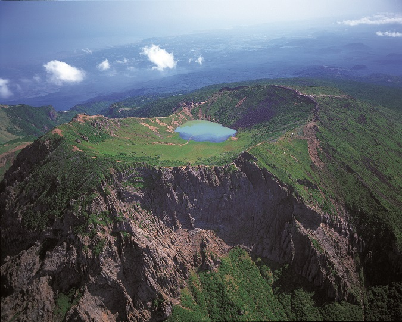
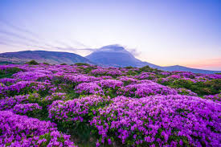
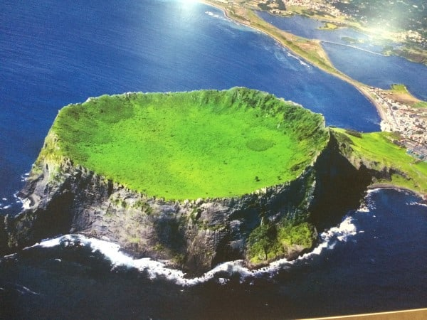

Hallasan
Hallasan is a shield volcano on Jeju Island of South Korea. It is the highest mountain in South Korea.
Mount Hallasan is a massive shield volcano which forms the bulk of Jeju Island and is often taken as representing the island itself. There is a local saying stating that "Jeju Island is Hallasan; and Hallasan is Jeju." The mountain can indeed be seen from all places on the island, but its peak is often covered in clouds. The mountain has been designated Korea's Natural Monument no. 182.
The volcanic island was constructed starting in the Pliocene epoch atop the continental shelf, which is about 100 m (300 ft) below sea level in that area. Eruptions of basalt and trachyte lava built the island above sea level, and it now reaches a height of 1,950 metres (6,398 ft). A large volcanic crater over 400 m (1,300 ft) in diameter tops the volcano. About 360 parasitic cones, ororeum in the Jeju dialect, are found on the volcano's flanks. Most of them are cinder cones and scoria cones, but there are also some lava domes and about 20 tuff rings near the coast and offshore, which were formed by underwater phreatic eruptions. The most recent eruptions occurred on the flanks in 1002 and 1007


